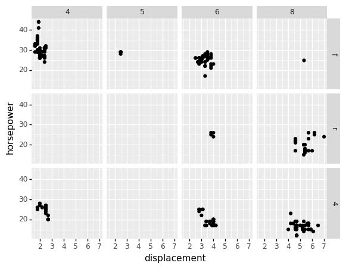

import pandas as pd
from plotnine import *
from plotnine.data import *
%matplotlib inline
---------------------------------------------------------------------------
ModuleNotFoundError Traceback (most recent call last)
/var/folders/kl/h_r05n_j76n32kt0dwy7kynw0000gn/T/ipykernel_6472/1542035129.py in <module>
1 import pandas as pd
2
----> 3 from plotnine import *
4 from plotnine.data import *
5
ModuleNotFoundError: No module named 'plotnine'
mpg.head()
| manufacturer | model | displ | year | cyl | trans | drv | cty | hwy | fl | class | |
|---|---|---|---|---|---|---|---|---|---|---|---|
| 0 | audi | a4 | 1.8 | 1999 | 4 | auto(l5) | f | 18 | 29 | p | compact |
| 1 | audi | a4 | 1.8 | 1999 | 4 | manual(m5) | f | 21 | 29 | p | compact |
| 2 | audi | a4 | 2.0 | 2008 | 4 | manual(m6) | f | 20 | 31 | p | compact |
| 3 | audi | a4 | 2.0 | 2008 | 4 | auto(av) | f | 21 | 30 | p | compact |
| 4 | audi | a4 | 2.8 | 1999 | 6 | auto(l5) | f | 16 | 26 | p | compact |
To change the plot order of the rows or columns in the facet grid, reorder the levels of the faceting variable in the data.
# re-order categories
mpg['drv'] = mpg['drv'].cat.reorder_categories(['f', 'r','4'])
# facet plot with reorded drv category
(
ggplot(mpg, aes(x='displ', y='hwy'))
+ geom_point()
+ facet_grid('drv ~ cyl')
+ labs(x='displacement', y='horsepower')
)

<ggplot: (308875485)>
mpg.columns
Index(['manufacturer', 'model', 'displ', 'year', 'cyl', 'trans', 'drv', 'cty',
'hwy', 'fl', 'class'],
dtype='object')
mpg.pipe(lambda x: x.assign(new_column = x.fl))
| manufacturer | model | displ | year | cyl | trans | drv | cty | hwy | fl | class | new_column | |
|---|---|---|---|---|---|---|---|---|---|---|---|---|
| 0 | audi | a4 | 1.8 | 1999 | 4 | auto(l5) | f | 18 | 29 | p | compact | p |
| 1 | audi | a4 | 1.8 | 1999 | 4 | manual(m5) | f | 21 | 29 | p | compact | p |
| 2 | audi | a4 | 2.0 | 2008 | 4 | manual(m6) | f | 20 | 31 | p | compact | p |
| 3 | audi | a4 | 2.0 | 2008 | 4 | auto(av) | f | 21 | 30 | p | compact | p |
| 4 | audi | a4 | 2.8 | 1999 | 6 | auto(l5) | f | 16 | 26 | p | compact | p |
| ... | ... | ... | ... | ... | ... | ... | ... | ... | ... | ... | ... | ... |
| 229 | volkswagen | passat | 2.0 | 2008 | 4 | auto(s6) | f | 19 | 28 | p | midsize | p |
| 230 | volkswagen | passat | 2.0 | 2008 | 4 | manual(m6) | f | 21 | 29 | p | midsize | p |
| 231 | volkswagen | passat | 2.8 | 1999 | 6 | auto(l5) | f | 16 | 26 | p | midsize | p |
| 232 | volkswagen | passat | 2.8 | 1999 | 6 | manual(m5) | f | 18 | 26 | p | midsize | p |
| 233 | volkswagen | passat | 3.6 | 2008 | 6 | auto(s6) | f | 17 | 26 | p | midsize | p |
234 rows × 12 columns
gapminder.filter(['country','dollars_per_day','continent'])